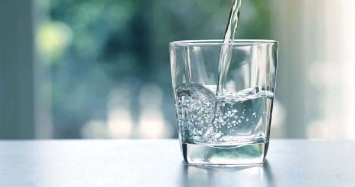

Optimism is an attitude reflecting a belief or hope that the outcome of some specific endeavor, or outcomes in general, will be positive, favorable, and desirable. A common idiom used to illustrate optimism versus pessimism is a glass filled with water to the halfway point: an optimist is said to see the glass as half full, while a pessimist sees the glass as half empty.
Always see beauty in every little thing
Always be grateful
Seek solutions, not problems
Love fearlessly
Always believe it's possible
Do the work, to make it possible
Only focus on you (what you can controle